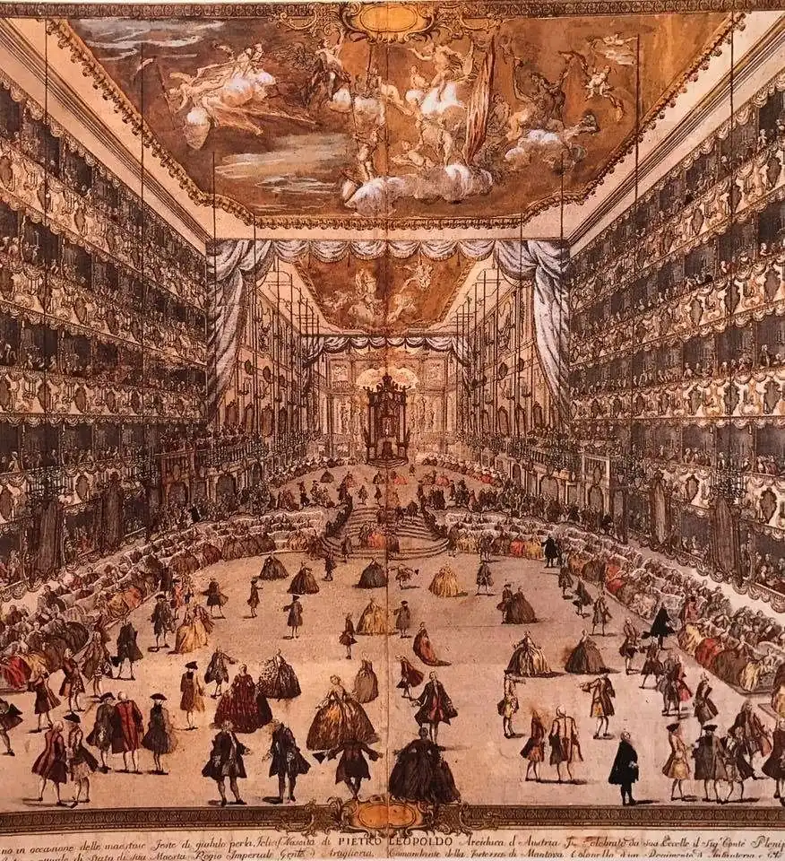

볼프강이 누나에게 · 1770년 1월 26일
모차르트의 편지 · I장 이탈리아 · Mailand

첫 문장 낭독 듣기 (독일어)
원문과 번역
Mich freut es recht von ganzem Herzen, daß Du bei der Schlittenfahrt, von der Du mir schreibst, Dich so sehr ergötzt hast, und ich wünsche Dir tausend Gelegenheiten zur Ergötzung, damit Du recht lustig Dein Leben zubringen mögtest.
누나가 편지에 쓴 썰매 타기가 그렇게 즐거웠다니 진심으로 기뻐. 누나한테 즐거울 일이 천 번은 더 생겨서, 평생 신나게 살면 좋겠어.
Just ehe ich diesen Brief angefangen habe, habe ich eine Arie aus dem Demetrio [von Metastasio] verfertigt, welche so anfängt: Misero tu non sei etc.
이 편지를 쓰기 바로 전에 메타스타시오의 〈데메트리오〉에 나오는 아리아를 하나 지었어. ‘미제로 투 논 세이’로 시작하는 거야.
Die prima Donna singt gut, aber still; und wenn man sie nicht agiren sähe, sondern singen nur allein, so meynte man, sie sänge nicht, denn den Mund kann sie nicht öffnen, sondern winselt Alles her …
프리마 돈나는 노래는 잘하는데 힘이 없어. 연기하는 걸 안 보고 노래만 들으면 노래를 안 하는 줄 알 거야. 입을 못 벌리고 다 낑낑대듯 부르거든.
Die seconda Donna macht ein Ansehen wie ein Grenadier, und hat auch eine starke Stimme; und singt wahrhaftig nicht übel, für das, daß sie das erste Mal agirt.
세콘다 돈나는 척탄병처럼 생겼고 목소리도 우렁차. 첫 무대인 걸 생각하면 정말 못 부르는 건 아니야.
Ein Grotesco ist da, der gut springt, aber nicht so schreibt wie ich: wie die Säue brumzen.
그로테스코 무용수가 하나 있는데 점프는 잘해. 그런데 나처럼은 못 써. 돼지가 꿀꿀대듯이 쓰거든.
편지에서 고른 문장들입니다. 번역은 언어 미술관이 새로 썼습니다.
그림은 1747년 밀라노 레조 두칼레 극장에서 열린 축하 무도회 장면이에요. 편지 속 만토바·크레모나의 극장은 아니지만, 바로 이 극장에서 그해 12월 볼프강의 오페라 〈미트리다테〉가 막을 올렸어요. 볼프강은 1769년 12월 아버지 레오폴트와 함께 첫 이탈리아 여행을 떠났어요. 이 편지는 열네 번째 생일 하루 전, 밀라노에서 썼어요. 만토바와 크레모나에서 본 오페라 가수들을 누나에게 장난스럽게 평가해요.
앱에서는 이 편지가 메신저처럼 한 줄씩 도착하고, 낱말마다 뜻이 함께 나와요. 편지 속 인물과 짧게 말해 보는 회화도 있어요. I장은 무료예요.
출처
- 그림: 작자 미상 · Festball im Teatro Regio Ducale, Mailand · 1747 · Wikimedia Commons · Public domain · 원본
- 편지 원문: Mozarts Briefe (L. Nohl, 1865), Nr. 3 · public domain · archive.org
- 낭독 음성: Supertonic 3 (Supertone Inc.) 로 만들었습니다 (모델 라이선스 OpenRAIL-M).
- 모든 출처: 언어 미술관 출처와 라이선스